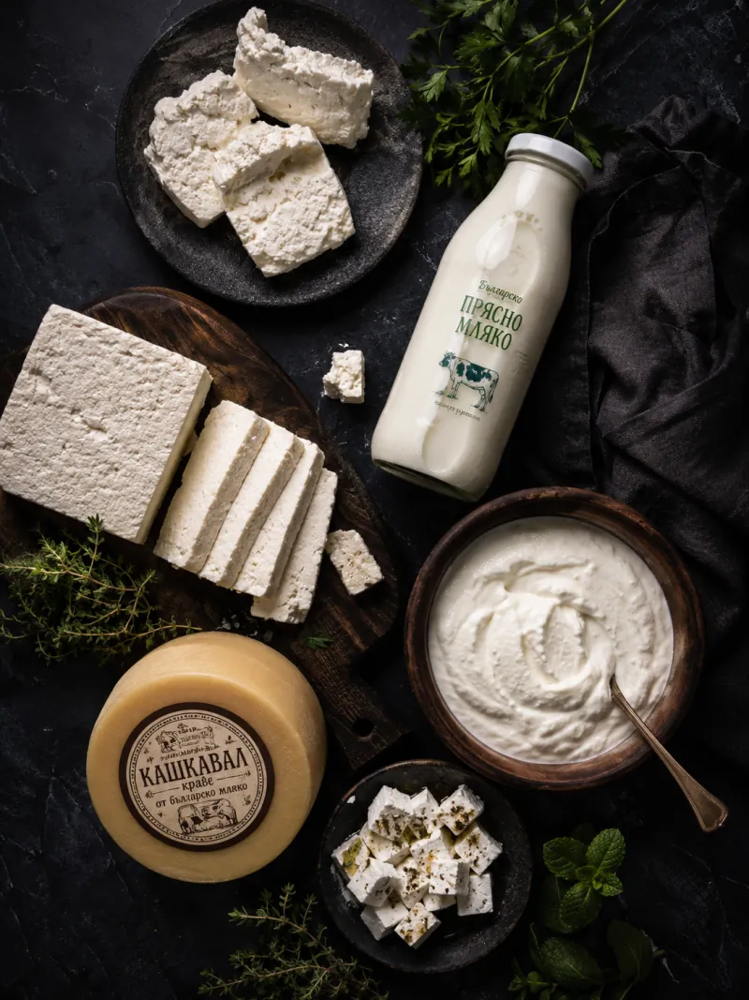
Седмично
Млечни Продукти
Над 100 вида · Седмична доставка
Разгледай →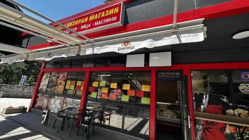
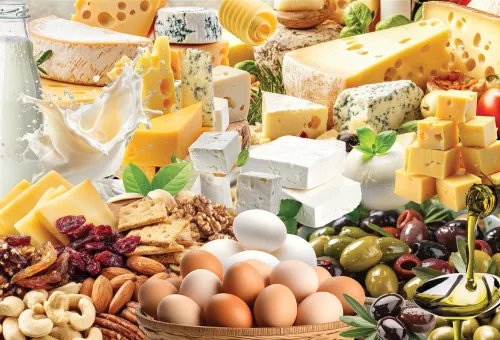
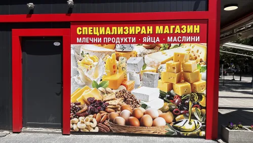
Млечко работи от 2010 година с едно убеждение: качествената храна не трябва да бъде лукс. Всяка седмица пресни млечни продукти, яйца и маслини пристигат директно от проверени производители, без посредници и надценки.
Специализираме се в едно нещо и го правим с последователност: да свържем пловдивските домакинства с истински пресни продукти, седмица след седмица, без отстъпки от качеството.
Качествена храна не трябва да бъде лукс. Пресни млечни продукти, яйца и маслини, доставени всяка седмица директно от производителите, без посредници.
Млечни продукти, пресни яйца и деликатеси, доставени прясно всяка седмица.
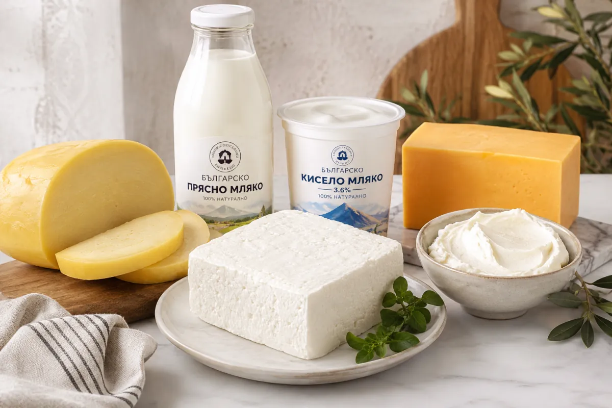
Прясно мляко, кисело мляко, сирене, кашкавал и масло, доставени прясно всяка седмица директно от производителя.
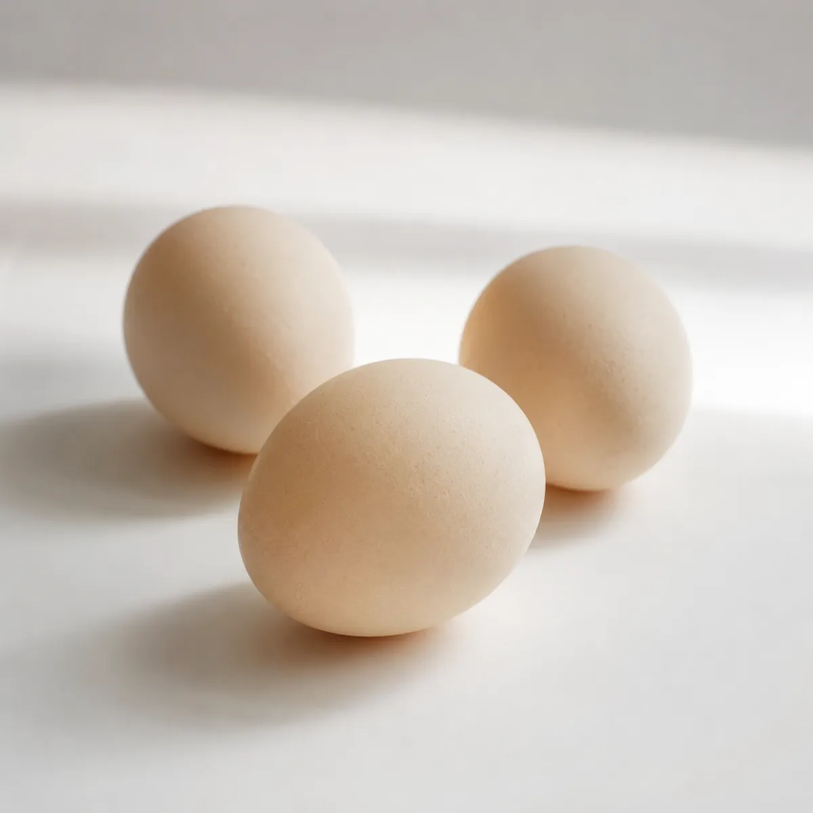
Яйца от малки семейни ферми, доставени прясно всяка седмица.
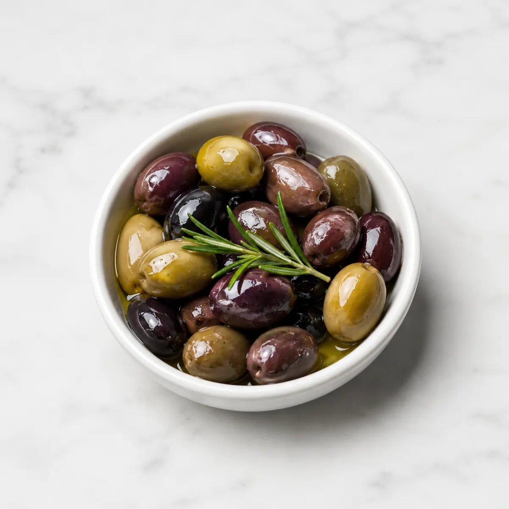
Маслини от Гърция, Испания и Близкия Изток, в различни сортове, на кило или предварително опаковани.
Витрините, рафтовете и щандовете такива, каквито ще ги видите на Пещерско шосе 26.
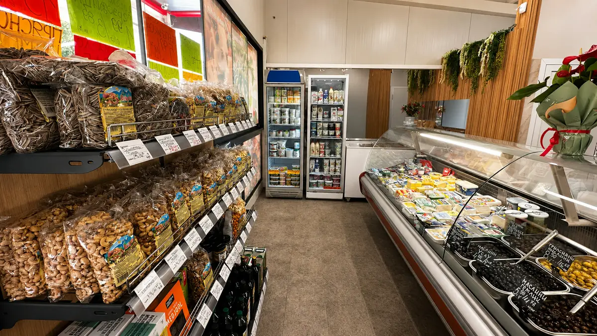
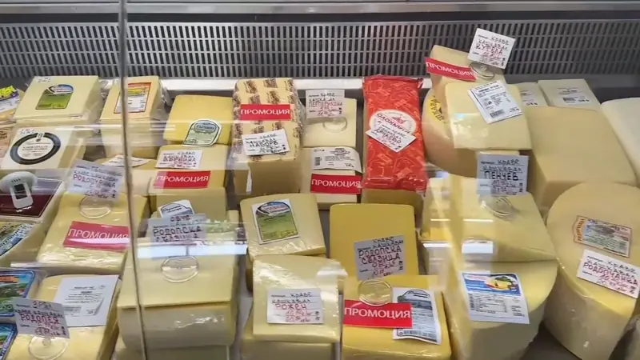
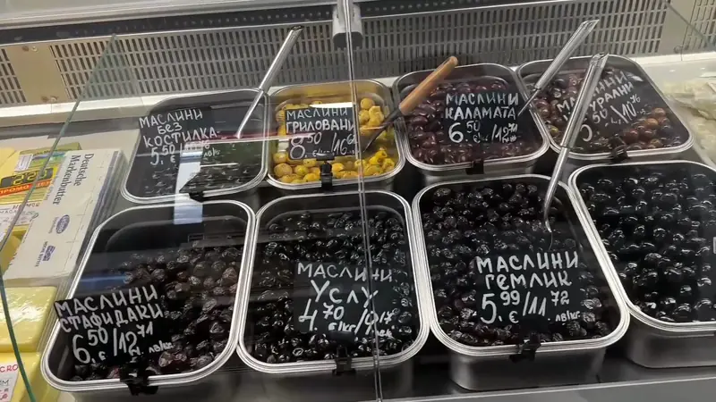
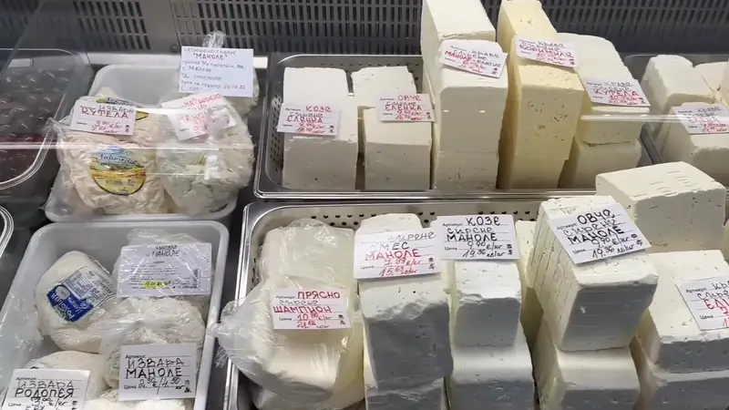
Истински мнения от клиенти, които се връщат при нас седмица след седмица.
Най-честите неща, които ни питат клиентите.
На бул. Пещерско шосе 26, кв. Младежки хълм, Пловдив.
Понеделник – петък: 09:30 – 20:00. Събота: 08:30 – 14:30. Неделя почивен ден.
Над 100 вида пресни млечни продукти, яйца и маслини, събрани от доверени производители.
Доставките са седмични — продуктите пристигат директно от производителите, без посредници и без дълъг престой по рафтовете.
От 2010 година обслужваме пловдивски домакинства с прясна храна на честни цени.
В момента продуктите се предлагат само на място в магазина. За въпроси и наличност пишете ни на 0878 232 365 или през Viber.
Адрес
бул. Пещерско шосе 26
гк. Младежки хълм, 4002 Пловдив
Работно Време
Телефон
Имейл